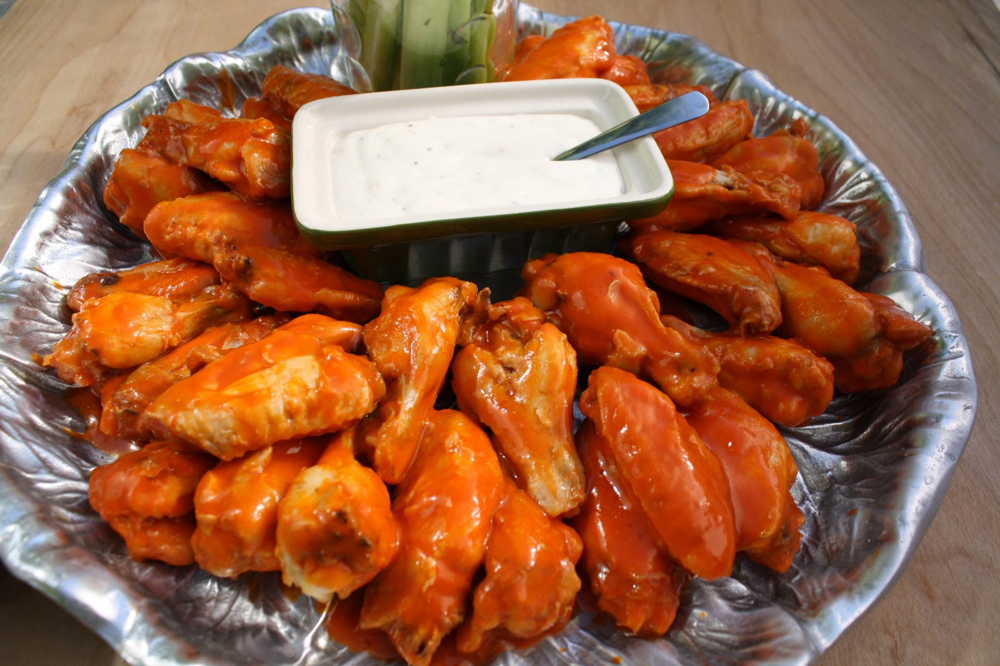

Food serves a purposed larger than providing us with the nourishment to live. Food is a gateway into so many different cultures. Understanding what types of food people eat and how they eat it can give you a different understanding of their traditions.